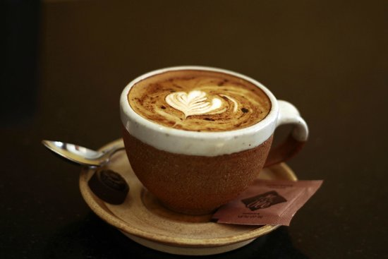
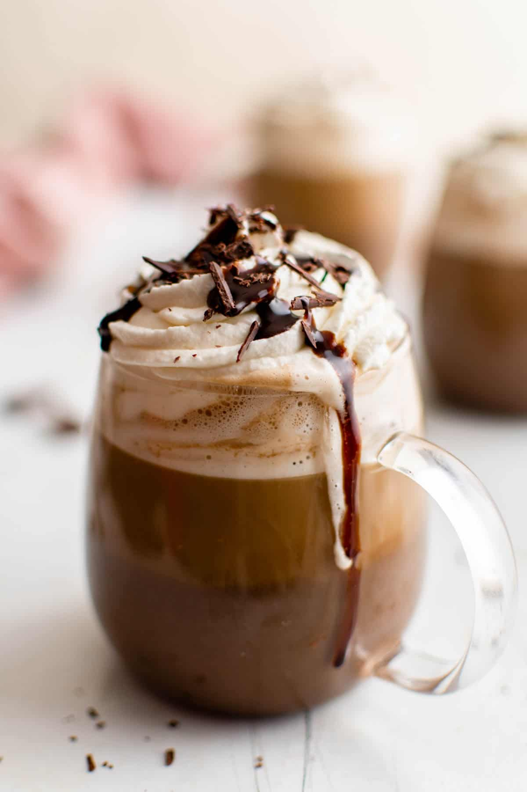
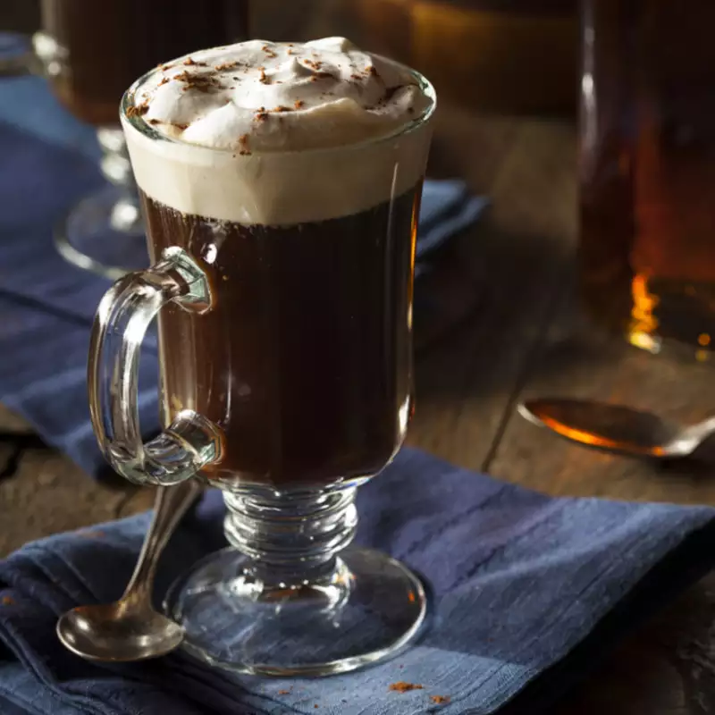

AMERICANO

Process:
- Use espresso roast coffee to make espresso using your favorite method: with an automated espresso machine, manual espresso maker, or Aeropress.
- Boil the water.Use a regular or electric teapot to boil the water. The standard ratio is 2:1 water to espresso, but you can go up to as much as 3:1
- Mix the two and enjoy!Pour the boiling water into the espresso. Instant Caffe Americano!
CAPPUCCINO

Ingredients:
- Espresso
- Fresh milk/oat milk
- Sugar
Process:
- First, steam the milk. Heat 1 cup of milk in a 2-quart saucepan over medium heat. Let the milk simmer until bubbles form around the edges, but don’t boil the milk. Remove the pan from heat and set it on a flat surface
- Next, whip the milk with an electric mixer, increasing the speed as the milk begins to thicken. Continue mixing until you get the desired volume of froth.
- Now, make the coffee. Measure 2 tablespoons of grounds for 5 to 6 ounces of water.
- Now, make the cappuccino! A classic cappuccino calls for 1/3 espresso, 1/3 steamed milk, and 1/3 foam. You can mix it up by using 2 or 3 tablespoons of flavored syrups or even different kinds of milk, like chocolate or vanilla.
LATTE

Process:
- Make your espresso or strongly brewed coffee: any strongly brewed espresso from a home espresso maker or a capsule machine like a Nespresso will do. Or use strongly brewed coffee from an Aeropress, not diluted with any water. I usually start with about 1/3 cup espresso, but this is up to you.
- Froth the milk: Pour milk into the jar. Fill no more than halfway. Screw the lid on tightly, and shake the jar as hard as you can until the milk is frothy and has roughly doubled in volume, 30 to 60 seconds..
- Microwave the milk: Take the lid off the jar and microwave uncovered for 30 seconds. The foam will rise to the top of the milk and the heat from the microwave will help stabilize it.
- Pour warm milk into the espresso
- Add foam: Spoon as much milk foam as you would like onto your latte
Things to know
- A latte is a coffee drink that is normally made with espresso, steamed milk, and milk foam.
- A cappuccino is very similar, but it has a greater percentage of foamed milk to steamed milk.
MOCHA

Ingredients:
- Espresso
- Milk
- Chocolate
- Sugar
Process:
- Start by brewing some coffee using your preferred method.
- Then, add some chocolate syrup to your hot coffee and stir. You could also use melted pieces of chocolate or cocoa powder to add the chocolate flavor. However, if you use cocoa powder, you will likely need to add sugar as well if you want it to be sweet.
- Then, it's time to add the milk. You can add the milk as-is, or you can take the extra time to heat and froth the milk, so it tastes more like a traditional mocha. The easiest way to froth milk is with a milk frother, but if you don't have one, try whisking the milk, blending it in a blender, or shaking it in a mason jar..
- Once you've added your milk to your coffee-chocolate mixture, it's ready to enjoy!
IRISH COFFEE

Ingredients:
- Espresso
- Milk
- Irish whiskey
- Sugar
- Brown sugar
- whipped cream
Process:
- Preheat your mug, then fill with coffee. Pour hot water into a mug or heatproof glass to take the chill off. Pour out the water. This will also prevent your glass from cracking. Fill the mug about 3/4 full with the coffee.
- Add sweetener. Add the granulated and brown sugars and stir until fully dissolved.
- Add Irish whiskey. Add the whiskey and stir to incorporate.
- Top with whipped cream. If using lightly whipped cream, pour it slowly over a warm spoon onto the coffee, being careful not to break the coffee's surface. This takes some practice. A more foolproof way to not break the surface is to whip the cream a bit more and dollop it gently on top. Drink while hot!